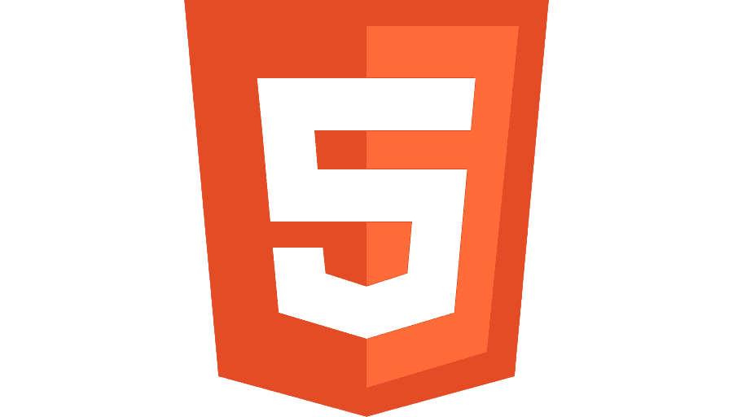
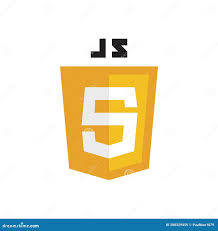
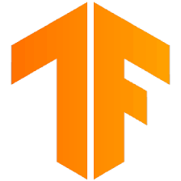
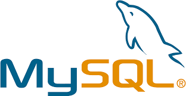
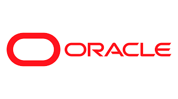
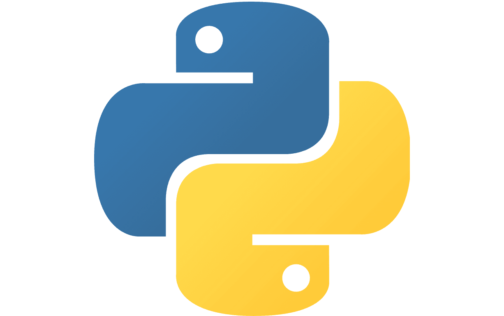

Heey ! Je suis Imrane
Étudiant en Master Informatique, en recherche d'une alternance DevOps ou Backend pour mon M2 à partir de septembre 2026.
À propos
Étudiant Master Informatique — Backend & DevOps
En recherche d'alternance pour septembre 2026
Autonome et orienté résultats, je conçois et déploie des projets complets de bout en bout — du backend Python/Java à l'infrastructure cloud. Mes deux stages et projets académiques m'ont confronté à des contraintes de production réelles.
Mon Parcours
Stage chez EnerFYH — en cours
Développement solo de BESS Site Finder — outil desktop de prospection géospatiale pour projets de stockage d'énergie par batteries. Agrégation de 3 000+ postes RTE/Enedis, intégration des API IGN, backend concurrent avec throttling, packagé en exécutable Windows.
Master Informatique — ISIMA
Université Clermont Auvergne. Spécialisation backend, DevOps, systèmes et réseaux.
Projet DevOps — ACNHCollector
Pipeline DevOps complet en totale autonomie sur infrastructure multi-cloud. IaC OpenTofu, Ansible, secrets OpenBAO, pipelines GitLab CI/CD sur 3 dépôts, reverse proxy Traefik, Docker multi-stage.
Stage chez CRP-CPO
4 outils livrés en 2 semaines dans un environnement médical et de recherche. Plateforme web, analyse de questionnaires, IA générative musicale, app de mesure du temps de réaction.
Licence Informatique
Université de Picardie Jules-Verne, Amiens.
Compétences
- C
 Java
Java- PHP

HTML CSS
CSS
JavaScript SQL
SQL- Bash
 React
React- WordPress
- Symfony

TensorFlow
MySQL
Oracle SQL Git
Git Docker
Docker Ansible
Ansible
Python Go
Go GitLab CI/CD
GitLab CI/CD
Expérience
- Développement solo de BESS Site Finder — outil desktop de prospection géospatiale pour projets de stockage d'énergie par batteries (BESS)
- Agrégation et normalisation des données capacité réseau de 3 000+ postes électriques RTE/Enedis (capareseau.fr, cartostock)
- Application Flask + Leaflet.js intégrant les API IGN en temps réel : cadastre, zones PLU, emprises bâties BD TOPO
- Algorithmes point-in-polygon, logique de zonage BESS, cartographie multi-couches (satellite / aérien / cadastral)
- Backend concurrent avec throttling pour gérer les limites des API publiques ; packagé en exécutable Windows autonome (PyInstaller + PyWebView)
- Pipeline DevOps complet en totale autonomie sur infrastructure multi-cloud (Clever Cloud, OVH, EduInfra)
- IaC avec OpenTofu multi-cloud ; génération automatique de l'inventaire Ansible depuis les outputs OpenTofu
- Secrets centralisés via OpenBAO (Vault-compatible) — credentials dynamiques et de courte durée
- Pipelines GitLab CI/CD sur 3 dépôts distincts (backend, frontend, infrastructure)
- Reverse proxy Traefik avec routage par label Docker ; conteneurisation multi-stage (Vue.js/Nginx + Spring Boot/JRE Alpine)
- 4 outils livrés en 2 semaines dans un environnement médical et de recherche
- Plateforme web de gestion d'événements dynamique (React, WordPress)
- Outil d'analyse de questionnaires avec visualisations interactives automatisées (PHP, MySQL)
- Prototype d'IA générative musicale conditionnée par émotion — sortie MIDI (TensorFlow)
- Application de mesure du temps de réaction pour stimuli visuels et sonores (Python, PyQt5)
- Microservices en Go — API REST, messaging asynchrone NATS JetStream, notifications email ⎇ GitHub
- Mini shell POSIX avec redirections, piping et gestion de processus (C, fork/exec) ⎇ GitHub
- Simulation multi-agents colonie d'abeilles — Java, POO, automates à états finis ⎇ GitHub
- Détection brute-force SSH via logs Linux + protection automatisée fail2ban
- IA stratégique Tic-Tac-Toe avec apprentissage par renforcement Q-Learning (Python, Tkinter)